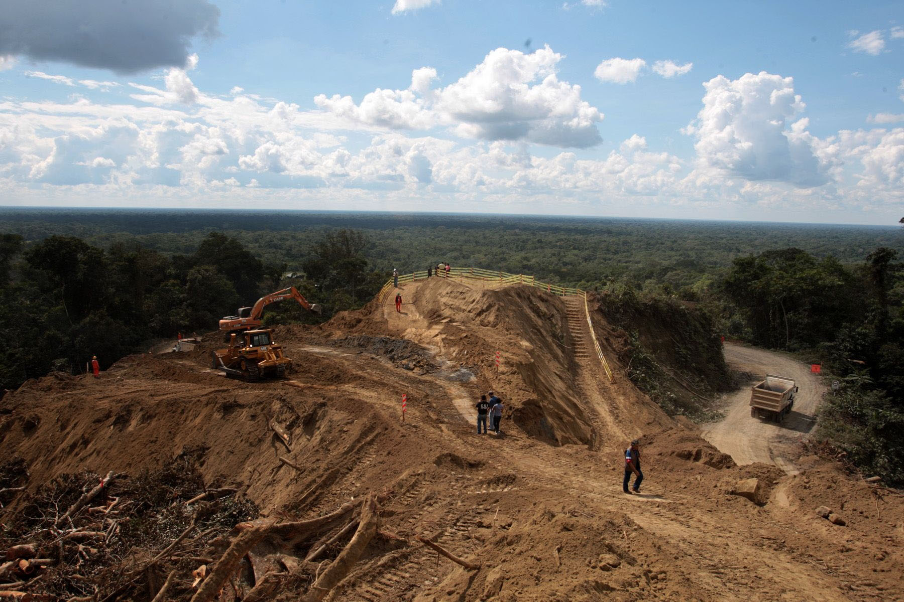

- 29/04/2004
- 12/01/2005
- 23/06/2005
- 03/08/2005
- 04/08/2005
- 24/01/2006
- 25/01/2006
- 02/2006
- 03/2006
- 26/07/2006
- 07/2007
- 08/2008
- 04/2011
- 04/2015
- 01/2017
- 04/02/2017
- 07/02/2017
- 28/02/2017
- 2018
- 2019
- 2020
- 2021
- 2022
- 2023
- 2024
- 2025
-
A través de la Ley 28214 se declaró de interés nacional y necesidad pública, la construcción del “Proyecto Corredor Vial Interoceánico Perú – Brasil”. Firmaron el ex presidente del congreso, Henry Pease García; y el ex primer vicepresidente del parlamento, Marciano Rengifo Ruiz.
-
El comité de la Agencia de Promoción de la Inversión Privada (PROINVERSIÓN), aprobó las bases del concurso para la entrega de la concesión de la carretera Interoceánica Sur. Ésta a su vez fue aprobada por el Consejo Directivo de PROINVERSIÓN en las fechas 14 y 18 de enero 2005.
-
El comité de PROINVERSIÓN otorgó la buena pro al consorcio CONIRSA, liderado por la constructora brasileña Odebrecht, y la empresa peruana Graña y Montero. Se les adjudicó la concesión para los tramos 2 y 3 de la Interoceánica Sur. El monto total de inversión fue de $ 800 millones.Dicho comité estuvo integrado por su ex presidente, Sergio Bravo Orellana; y sus ex miembros, Patrick Barclay Méndez y Alberto Pasco Font.
-
La ex vicecontralora, Rosa Urbina Mancilla, remitió una carta al Director Ejecutivo de PROINVERSIÓN, René Cornejo Díaz. En ésta le advirtió que las empresas Odebrecht, y Graña y Montero; no podían licitar con el Estado ya que tenían juicios pendientes por deficiencias en obras públicas.
-
10:15 a.m El Comité de PROINVERSIÓN recibió en Palacio de Gobierno, la carta de la vicecontralora, en la cual se advertía que Odebrecht y Graña y Montero no podían licitar con el Estado Peruano los tramos 2, 3 y 4 de la Interoceánica Sur.
1:05 p.m Se suspendió la sesión para que el Consejo Directivo de PROINVERSIÓN emitiera una opinión sobre lo señalado. El consejo estaba integrado por siete ministros. Entre ellos el ex Primer Ministro, Carlos Ferrero Costa y el ex Ministro de Economía y Finanzas, Pedro Pablo Kuczynski.
1:50 p.m Se reanudó la sesión. A pesar de la advertencia de la Contraloría, el Consejo Directivo ordenó que se apruebe el contrato. Firmó el contrato el ex Viceministro de Transportes, Nestor Palacios Lanfranco.
-
El ex congresista de Perú Posible, Gilberto Díaz, presentó el proyecto de ley 28670. Dicha norma declaró de interés nacional varios proyectos, entre ellos la Interoceánica Sur.
-
Se publicó la Ley 28670 en el diario oficial El Peruano, con las firmas del ex presidente Alejandro Toledo, y su ex ministro de economía, Pedro Pablo Kuczynski.
-
Desde Febrero hasta Julio del 2006, durante el gobierno de Alejandro Toledo, se añadieron 3 adendas al tramo dos y otras 3 al tramo tres de la Interoceánica Sur. Todas fueron firmadas por el ex Viceministro de Transportes, Néstor Palacios Lanfranco.
-
Se inició la construcción de la Interoceánica Sur, haciendo caso omiso a la prohibición que tenía Odebrecht, y Graña y Montero, de contratar con el Estado Peruano.
-
Dos adendas (para el tramo dos y la otra para el tramo tres de la Interoceánica Sur) fueron firmadas el 26 de Julio de 2006. Apenas dos días antes que Alejandro Toledo dejara de ser Presidente del Perú.
-
Desde Julio del 2007 hasta Diciembre del 2010, durante el segundo gobierno de Alan García, se añadieron nueve adendas para los tramos dos y tres de la Interoceánica Sur. Firmaron los ex viceministros de transportes: Hjalmar Marangunich Rachumi, Carlos Puga Pomareda y José Gonzáles Quijano.
-

La construcción de la Interoceánica Sur aumentó de $ 800 millones a $1303 millones.
-
La Contraloría detectó que en los contratos para la concesión de los tramos de la Interoceánica Sur, se usaron las mismas fórmulas que en los tramos de la Interoceánica Norte. Contraloría advirtió que se trataba de lugares geográficos muy diferentes.
-
La construcción de la Interoceánica Sur aumentó a $ 2000 millones, de los $ 800 millones que costaba en el 2005. Según reportes de OSITRAN, el tramo 2 aumentó de $ 213 millones a $ 653 millones. Y el tramo 3 se incrementó de $ 294 millones a $ 602 millones.
-
Según reportes de PROVÍAS, el tramo dos de la Interoceánica Sur subió a $ 1,081,494 millones. Y el tramo tres a $ 1,131,154 millones.
-
El ex director ejecutivo de Odebrecht en Perú, Jorge Barata, declaró al Ministerio Público haber pagado 20 millones de dólares al ex presidente Alejandro Toledo, por la adjudicación de los tramos dos y tres de la Interoceánica Sur a la brasileña Odebrecht.
Hasta el momento las Fiscalías de Perú y Brasil han encontrado que $11 millones fueron a distintas cuentas de Josef Maiman, amigo íntimo de Toledo. Ambos personajes son investigados por lavado de activos.
-

El Ministerio Público presentó un pedido de prisión preventiva por 18 meses contra Alejandro Toledo.